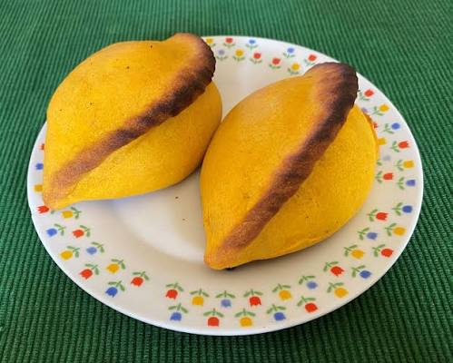

Salteña

The "Salteña" is an iconic Bolivian empanada —filled with meat, egg, potato,
peas, olives, and spicy chili— with a history spanning more than two centuries
within Bolivian gastronomy. This delicious empanada serves as a culinary
symbol that brings millions of people in Bolivia together; it is both a dish
for special occasions and a source of livelihood through local businesses.
The uniqueness of the salteña lies in its filling made with native Bolivian
ingredients, such as chili peppers, potatoes, and a stew prepared with beef
foot broth.
Ingredients
Ingredients for the dough:
- 4 cups of flour
- ½ cup of lard colored with annatto (urucú or achiote)
- ½ cup of sugar
- ¾ cup of water
- 1 egg
Other ingredients
- ½ kg ground beef, browned
- 1 cup finely chopped onion
- 3 tablespoons oil
- 6 tablespoons ground red chili (ají colorado)
- 1 teaspoon cumin
- 1 tablespoon oregano
- 2 tablespoons red food coloring powder
- ½ liter beef broth
- 2 cups cooked, cubed potatoes
- 1 heaping tablespoon unflavored gelatin
- ¼ cup sugar
- 2 tablespoons chopped parsley
- Salt to taste
- Hard-boiled quail eggs
Steps
- In a pan, melt the lard over low heat.
- Add the urucú (annatto) and stir constantly until the lard takes
on the color of the annatto.
- Remove the annatto and let the lard cool until it solidifies.
Preparing the salteña dough
- Place the flour on a work surface and mix it with the
achiote-infused lard until the mixture has a sandy texture.
- Create a well (a "volcano" shape) in the mixture and add the sugar,
salt, and egg to the center, then gradually add the water.
- Mix everything thoroughly and knead until the dough is firm
and well combined.
- Divide the dough into small balls and cover them with a plastic bag.
- Refrigerate the dough balls for approximately 20 minutes.
Preparing the "jigote" (filling) for "salteñas"
- In a pan with hot oil, sauté the onion until translucent.
- Add the ground meat and brown it; then add the ground red chili
("ají colorado"), cumin, red food coloring, beef broth, sugar, and salt.
- Cook over medium heat for 25 minutes, until the "jigote" thickens slightly.
- Remove from the heat, sprinkle the unflavored gelatin over the
mixture, and stir well.
- Add the cubed potatoes, chopped parsley, and oregano. Adjust the salt if
necessary and mix thoroughly. Then, let it cool.
- Cover the mixture and refrigerate until the "jigote" sets.
Assembling the salteñas
- Remove the dough balls from the refrigerator and roll them out with a
rolling pin until you have medium-thick, oval-shaped pieces of dough.
- Place a spoonful of the prepared filling ("jigote") and one hard-boiled
quail egg in the center of each piece of dough.
- Brush the edges of the dough with beaten egg, close the salteña,
and press down to remove any air before crimping the edges.
- Arrange the salteñas on a baking sheet, brush them with beaten egg,
and bake at 350°C for 10 to 15 minutes.
Home